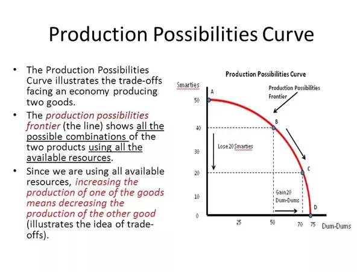
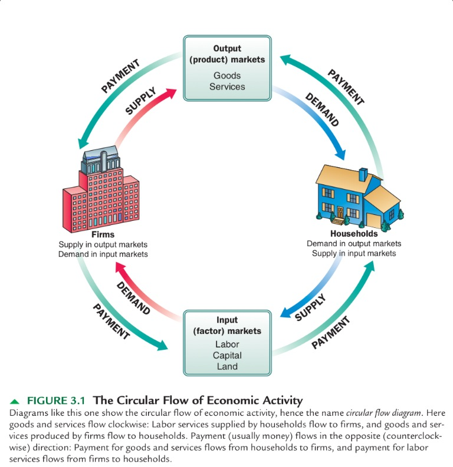

Economics
Introduction to Economic Theory
In order to understand the production and consumption of goods and services,
as well as the transfer of wealth and allocation of resources, we use
economics. The reason why we must study economics
is because of scarcity.
Scarcity occurs because unlimited wants meet limited resources,
leading to a need for allocation of available resources to account for the needs and wants
of the people. Scarcity leads to three questions that need to be answered by any economic system:
1. How do we produce goods and services?
2. What do we produce with the limited resources available?
3. For whom do we produce for in order to meet their needs and wants?
There are two types of economic systems on the extreme: market and command. A market economy
delegates the answering of these three questions to the individuals and firms.
A command economy delegatest the questions to the government. The reason why command economies
are less successful than market economies is because they do not account for the wants of the people
and only regard the needs. A mixed economy utilizes characteristics of both market and command economies.
In answering these questions, one must consider the trade-offs of a certain decision.
The most valuable trade-off is known as the opportunity cost.
For example, if I have to choose between studying for a test, preparing for a violin competition,
and doing a college tour, and I choose studying for the test, then the other options become my trade-offs.
If I had not studied for the test, then I most likely would have done the college tour. That means
that the tour is my opportunity cost, since it is the most valuable option among the trade-offs.
There are four types of resources: land, labor, capital, and entrepreneurship.
Land is the location and geographical areas that are used to produce; labor is the human
resources that are used such as employees, workers, etc; capital is the tools
that are used to aid production; and entrepreneurship is the advent of creativity that leads
to the ideas of production and therefore leads to the utilization of the other types
of resources.
Production Possibilities
We can model the possibilities of production for a system can be modeled using
a production possibilities curve or frontier (PPC/PPF), which displays the allocation
and relationship between two possible results of production. This also shows
the opportunity cost. You can have zero, constant, or increasing/decreasing opportunity cost.

Supply and Demand
Market Structures
Factor Markets
Recall from the circular flow model that the factor market is where firms pay the households for resources.
Basic Macroeconomic Concepts
National Income and Price Determination
Money and Banking